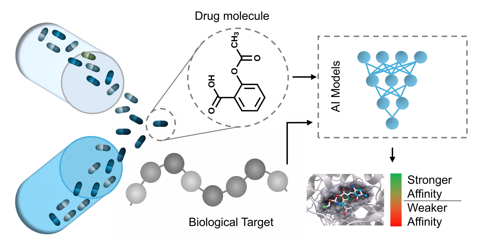
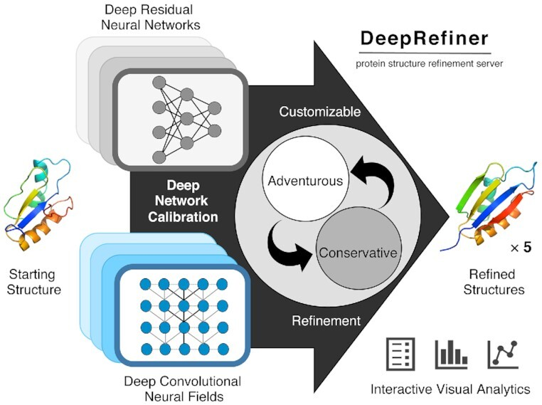
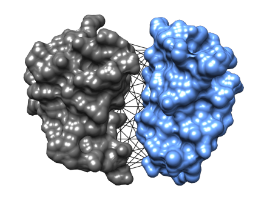
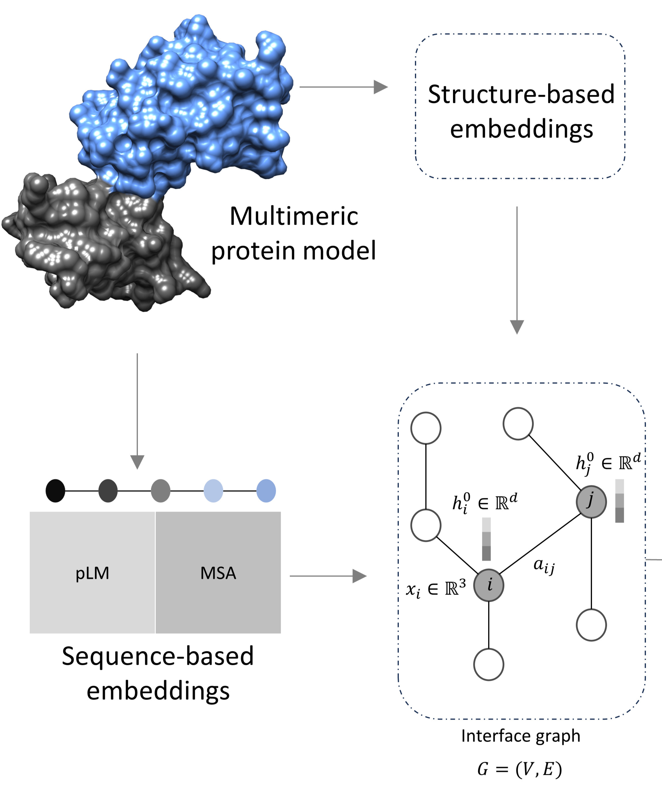
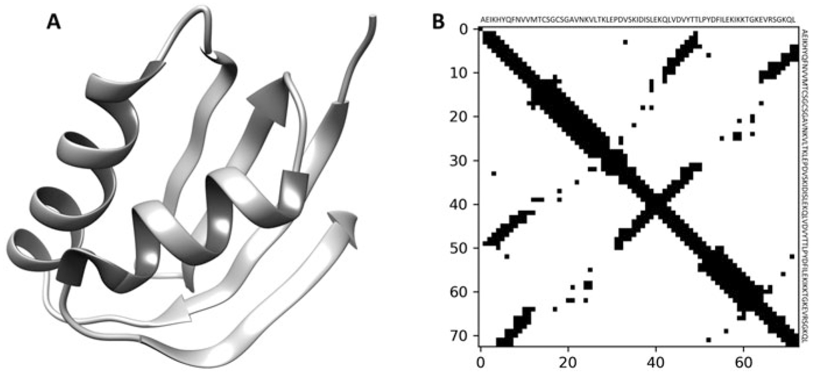
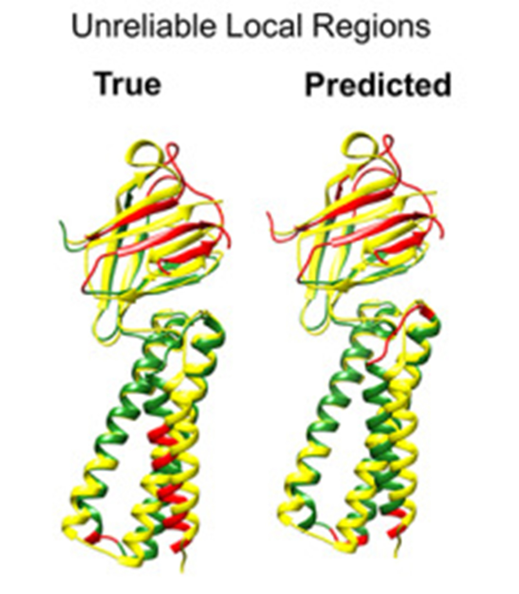
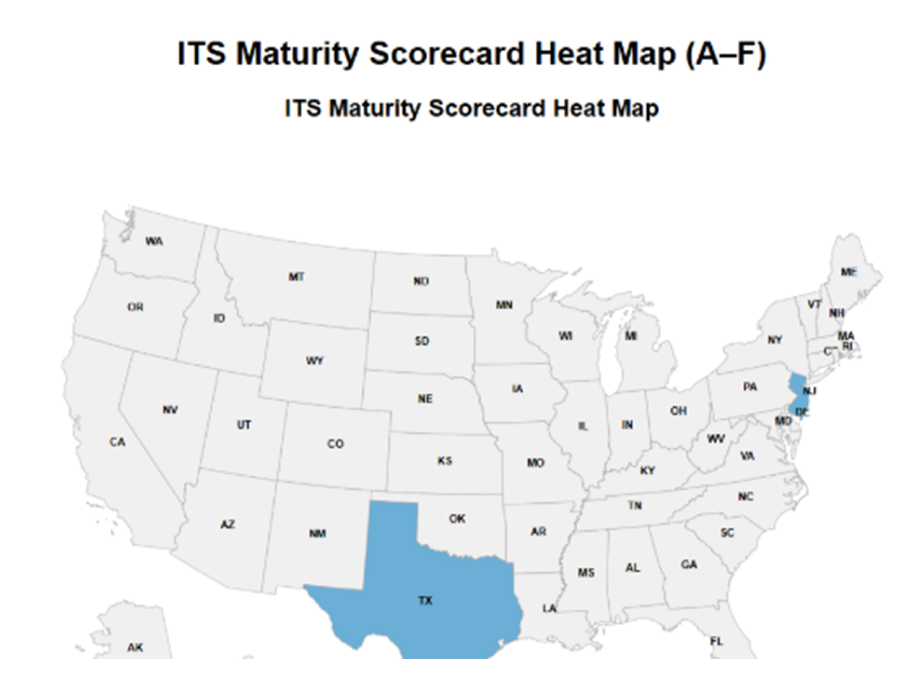

Assistant Professor, Department of Computer Science
My research interests lie in Computational Biology, Applied Machine Learning, and Artificial Intelligence. My group develops data-driven computational methods to understand protein structures, protein–protein interactions, and biological function, using artificial intelligence to support biological discovery.
I am a recipient of a Research Initiation Award (RIA) from the National Science Foundation (NSF). I have also been honored with multiple fellowship awards including the Pratt Fellowship Award, 2023 at Virginia Tech. Additionally, I received the 1st place prize in the Young Scientist Excellence Award competition at MCBIOS, 2022.
Prior to joining PVAMU, I obtained my Ph.D. in Computer Science from Virginia Tech in 2023 under the supervision of Dr. Debswapna Bhattacharya.
I am open to collaboration and actively pursuing collaborative opportunities to broaden my interdisciplinary research capabilities, particularly in the realm of Computational Biology, Artificial Intelligence, and applied machine learning.
I am seeking motivated graduate and undergraduate students with strong programming and AI/ML interests. Graduate applicants should have a bachelor's degree in computer science or a related field.
Fill Out Form| 09/04/2026 | Awarded the RISE Undergraduate Research Grant by Research & Innovation at PVAMU |
| 08/18/2026 | Awarded an NSF Research Initiation Award of $445,686 as the PI. |
| 08/17/2026 | Jafin's paper is now available on arXiv. |
| 07/20/2026 | Served as a Data Science PFx Instructor at the Atlanta University Center Consortium |
| 06/26/2026 | Served as an instructor for the 2026 PVAMU WeTeach_CS Hub Summer Institute |
| 06/17/2026 | Presented our research work at the CUTC Summer Meeting at Auburn University, AL |
| 06/08/2026 | Attended the PVAMU MicroCredential Institute in the Woodlands, TX |
| 05/20/2026 | We welcome postdoctoral researcher Dr. Islam and two undergraduate students, Haley and Jadarius. |
| 05/12/2026 | Contributed to 3rd NCIT workshop |
| 04/30/2026 | Danario successfully defended his Master's thesis. Congratulations Danario! | Snapshot |
| 04/20/2026 | Danario’s paper was published in IEEE Xplore |
| 04/10/2026 | The group of Omar, Ryan, Wali, and Amina won the first place in the poster presentation at Student Research Day| News |
| 04/07/2026 | Undergraduate student Jafin Khan presented her poster at the Student Research Day at Prairie View A&M University | Snapshot | Poster |
| 04/07/2026 | Two senior design groups presented their research projects at Student Research Day at Prairie View A&M University | Group 1 & Group 2 |
| 11/19/2025 | Received the PIER Award in collaboration with the Department of Physics |
| 10/22/2025 | Hosted Dr. Rahmatullah Roche for a research talk at CCSB@PVAMU | Watch | 10/17/2025 | Elected as a Faculty Advisory Council member for the College of Engineering at PVAMU |
| 10/08/2025 | Presented our research works at CCSB@PVAMU |
| 09/10/2025 | Awarded the RISE Undergraduate Research Grant by Research & Innovation Division at PVAMU |
| 08/06/2025 | Attended Quantum Security and Machine Learning Workshop at the University of Tennessee at Chattanooga |
| 07/28/2025 | Our EquiPNAS article is amongst the most-cited recent articles in Nucleic Acids Research |
| 07/18/2025 | Served as a Data Science PFx Instructor at the Atlanta University Center Consortium |
| 07/18/2025 | Attended the AI-assisted Cybersecurity Workshop at Tennessee Tech University |
| 05/30/2025 | Contributed to the GET-PHIT Summer 2025 bootcamp | Snapshot |
| 04/22/2025 | Awarded $5,000 in Google Cloud research resources |
| 02/19/2025 | Presented our research works at CCSB@PVAMU | Watch |
| 01/02/2025 | Our EquiRank paper is published in Computational and Structural Biotechnology Journal |
| 12/18/2024 | Attended GenAI Faculty Summit organized by Google. Snapshot |
| 10/12/2024 | Presented our EquiRank work at ICIBM 2024, held at Rice University |
| 09/15/2024 | Awarded FEP award by the Roy G. Perry College of Engineering at PVAMU |
| 08/31/2024 | Organized Machine Learning workshop jointly with Dr. Wang, sponsored by Google's TEC |
| 08/23/2024 | Our EquiRank work has been accepted to ICIBM 2024 |
| 07/19/2024 | Served as a Data Science PFx Instructor at the Atlanta University Center Consortium |
| 04/09/2024 | Selected as 1 of the 20 Researchers for the Research Affinity Cohort (RAC) program of the National Data Science Alliance (NDSA) |
| 04/05/2024 | Presented research work on Faculty Research Day at PVAMU R&I Week, 2024 |
| 04/02/2024 | Graduate student Sheriff Adepoju presented a poster at PVAMU R&I Week, 2024 |
| 03/12/2024 | Awarded the Google TEC Impact Fund, led jointly with Dr. Wang |
| 01/28/2024 | Our EquiPNAS paper is published in NAR |
| 01/02/2024 | I joined the Department of Computer Science at Prairie View A&M University as an Assistant Professor |
| 12/05/2023 | Successfully defended Ph.D. dissertation. Acknowledgment |
| 11/10/2023 | Accepted a tenure-track Assistant Professor position in the Computer Science department at Prairie View A&M University |
| 10/25/2023 | Passed the CS@VT Research Defense |
| 09/17/2023 | Our EquiPNAS preprint is available at bioRxiv |
| 08/31/2023 | Our EquiPPIS paper has been accepted for publication in PLOS Computational Biology and available here |
| 07/25/2023 | Awarded the Pratt Fellowship at VT |
| 06/19/2023 | Served as a subreviewer |
| 06/02/2023 | Our PIQLE paper has been accepted by Bioinformatics Advances and available here |
| 05/09/2023 | Passed the CS@VT PhD preliminary exam |
| 03/28/2023 | Our book chapter on homology modeling is published and available here |
| 03/17/2023 | Our iQDeep paper has been accepted for publication in JMB |
| 02/15/2023 | Our PIQLE paper is available at bioRxiv |
| 12/17/2022 | Our EquiPPIS paper is available at bioRxiv |
| 11/22/2022 | The CASP15 abstract has been published and is available here |
| 11/16/2022 | Our book chapter on homology modeling has been accepted for publication to Springer Nature |
| 8/19/2022 | Participated in the 15th Critical Assessment of Protein Structure Prediction experiments (CASP15) |
| 07/31/2022 | Our iQDeep web server is released for beta testing |
| 07/12/2022 | Our rrQNet paper is published in PROTEINS |
| 06/20/2022 | Our DeepRefiner abstract has been accepted for the ACM-BCB 2022 Highlights Track |
| 04/27/2022 | Won first place in Young Scientist Excellence Award competition at MCBIOS 2022 |
| 04/08/2022 | Selected as one of the finalists for Young Scientist Excellence Award at MCBIOS 2022 |
| 11/15/2021 | Passed the CS@VT PhD qualifier process |
| 8/30/2021 | The CASP-COVID experiment paper is published in PROTEINS |
| 8/11/2021 | Moved to Virginia. Snapshot |
| 6/10/2021 | Served as a subreviewer at BIOKDD 2021 |
| 5/17/2021 | Our DeepRefiner paper is published in Nucleic Acids Research |
| 4/21/2021 | Our DeepRefiner paper is accepted by Nucleic Acids Research |
| 4/21/2021 | Our review paper is accepted by Frontiers |
| 12/20/2020 | Our DeepRefiner webserver is publicly released |
| 7/16/2020 | Presented the poster for our aceepted QDeep method at ISMB 2020. Presentation |
| 7/13/2020 | Our QDeep paper is published in ISMB 2020 special issue of Bioinformatics |
| 6/12/2020 | Received ISMB 2020 fellowship award |
| 6/6/2020 | Our QDeep paper is accepted by ISMB 2020 |
| 5/18/2020 | Participated 14th Critical Assessment of Protein Structure Prediction challenge (CASP14) |
| 3/13/2020 | Participated CASP_Commons (COVID-19, 2020) |
| 5/30/2020 | Our method QDeep is accepted for a poster presentation at ISMB 2020 as part of the 3DSIG COSI |
| 1/13/2020 | Our SPECS paper is accepted by PLOS ONE |
| 5/1/2018 | Participated 13th Critical Assessment of Protein Structure Prediction challenge (CASP13) |

AI-driven drug–target binding affinity prediction
Read more
Deep learning for error estimation, structure scoring, and refinement
Read more
Equivariant graph neural networks for binding site prediction, interface identification, and interface accuracy estimation
Read more
Protein Language Models (pLMs) for molecular embeddings
Read more
Threading, template-based modeling, and contact-assisted threading for accurate protein structure prediction
Read more
CASP_Commons:Community-wide SARS-2-CoV structure modeling initiative
Read more
AI applications in intelligent transportation and sustainable materials discovery
Read more